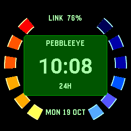
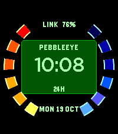
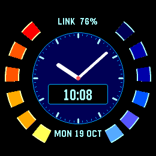
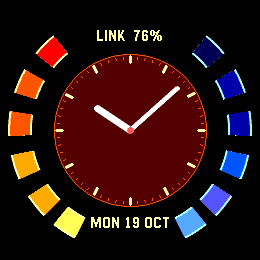

Digital
Clear numerals in an instrument-style panel. One glance and you’re ready.
A classic spy-watch display, reimagined for Pebble Time 2 and Round 2. Pick your dial. Pick your colour. Make it yours.
Pebble Time 2Pebble Round 2


Clear numerals in an instrument-style panel. One glance and you’re ready.

A full-size dial and clean hands, framed by the signature segmented ring.
Full-size hands with digital time over the dial. The best of both views.
Choose a date format, show or hide watch status, and add a seconds hand while the backlight is on. Undo changes or save when it feels right.
Native layouts for Time 2 and Round 2. Your watch’s 12-hour or 24-hour preference. Seconds off by default, with normal timekeeping updates once a minute.